kluster.RdAutomatically cluster 1-dimensional continuous data.
kluster(x, bw = "SJ", fixed = FALSE)
| x | Vector to be clustered. Must contain at least 1 non-missing value. |
|---|---|
| bw | kernel bandwidth. Default "SJ" should suffice more application, however you can supply a custom numeric value. See ?stats::density for more information. |
| fixed | logical; if |
An integer vector identifying the cluster corresponding to each element in x.
# Below vector clearly has 2 groups. # kluster will identify these groups using kernel density estimation. kluster(c(0.1, 0.2, 1))#> [1] 1 1 2# kluster shines in cases where manually assigning groups via "eyeballing" is impractical. # Suppose we obtained vector 'x' without knowing how it was generated. set.seed(1) nodes <- runif(10, min = 0, max = 100) x <- lapply(nodes, function(x) rnorm(10, mean = x, sd = 0.1)) x <- unlist(x) kluster(x) # kluster reveals the natural grouping#> [1] 3 3 3 3 3 3 3 3 3 3 4 4 4 4 4 4 4 4 4 4 5 5 5 5 5 5 5 5 5 5 6 6 6 6 6 6 6 #> [38] 6 6 6 2 2 2 2 2 2 2 2 2 2 6 6 6 6 6 6 6 6 6 6 6 6 6 6 6 6 6 6 6 6 5 5 5 5 #> [75] 5 5 5 5 5 5 5 5 5 5 5 5 5 5 5 5 1 1 1 1 1 1 1 1 1 1kluster(x, bw = 10) # adjust bandwidth depending on application#> [1] 1 1 1 1 1 1 1 1 1 1 1 1 1 1 1 1 1 1 1 1 2 2 2 2 2 2 2 2 2 2 3 3 3 3 3 3 3 #> [38] 3 3 3 1 1 1 1 1 1 1 1 1 1 3 3 3 3 3 3 3 3 3 3 3 3 3 3 3 3 3 3 3 3 2 2 2 2 #> [75] 2 2 2 2 2 2 2 2 2 2 2 2 2 2 2 2 1 1 1 1 1 1 1 1 1 1# Example with faithful dataset faithful$k <- kluster(faithful$eruptions) library(ggplot2) ggplot(faithful, aes(eruptions)) + geom_density() + geom_rug(aes(color = factor(k))) + theme_minimal() + scale_color_discrete(name = "k")